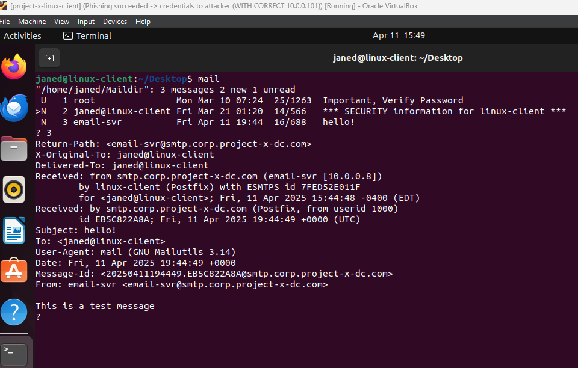

This diagram shows the vulnerable enterprise environment I configured for red team testing. Each component is intentionally misconfigured — from insecure SSH and RDP settings to exposed services and phished credentials — in order to simulate realistic attack paths across the lab.
Vulnerable Lab Network Diagram
(Click to enlarge)
×
üß® Setting Up a Vulnerable Environment
In this part of the project, I’ll be applying insecure configurations across the Project-X environment.
This includes default or insecure SSH passwords, phished credentials, an insecure WinRM service, no encryption, and insecure RDP access.
Detection integrations will come after this section.
üõ†Ô∏è First Target: Project-X Email Server (Ubuntu 22.04 running Postfix)
The first configurations I focused on were for the Project-X email server, running Ubuntu Server 22.04 LTS and Postfix.
üî• Security Implications of a Poorly Configured Email Server
Running a server with default configurations can introduce serious risks:
Outdated and vulnerable software
Default settings that are easy to exploit
A bigger attack surface for threats like brute-force, phishing, or privilege escalation
My goal is to apply security monitoring configurations later in Wazuh so I can get notified or alerted when specific suspicious activity happens — and catch an attacker right in their tracks.
üõ†Ô∏è First Configurations: Enabling SSH on Email Server
SSH is typically enabled on administrative servers because it makes remote login easy for administrators. Since this is an email server that routes and propagates email, if an attacker finds it online and sees SSH open, it immediately becomes a target.
Steps: Enable the SSH server and make sure it runs on boot:
Now it was time to apply some various vulnerable configurations that could realistically exist in the real world.
Inside the SSH config file:
Navigated to the #PermitRootLogin block
Uncommented the line and changed prohibit-password to yes
Located the PasswordAuthentication line and uncommented it (if it was commented)
Then I restarted the SSH service to apply the changes:
sudo systemctl restart ssh
üîë Setting a Weak Root Password
After enabling root login, I set root’s password to a very simple, guessable password:
sudo passwd root
Password used: november
At this point, I was officially logged into the server as root.
üî• Opening Firewall for SSH
The final thing I did was enable the UFW firewall and allow port 22 for SSH traffic:
sudo ufw allow 22
sudo ufw enable
Now Postfix and SSH (port 22) were open on both IPv4 and IPv6, fully exposed.
üìã Detection Integration
Detection Integration [project-x-email-svr] does not have the Wazuh agent installed.
This is intentional to demonstrate how the absence of detection controls can create a gap in identifying potentially malicious activity.
üñ•Ô∏è Moving to the Next Machine: Project-X Linux Client (project-x-linux-client)
Now it was time to move on to the next virtual machine and perform the same actions on the Project-X Linux Client.
I performed the same steps as I did on the email server:
- Enabled SSH
- Allowed password authentication
- Permitted root login
- Set the root password to november
✅ The main difference was that the Linux client does have the Wazuh agent installed, so later, I could detect suspicious activities like brute-force login attempts.
üì¨ Establishing Email Communication Between Email Server and Linux Client
Now I’m going to establish a connection between the email server and the Janed Linux client so we can route email between each other.
At this point, the email-svr can only route email to itself — it cannot yet deliver messages to other machines on the network.
üì¶ Installing Postfix on Linux Client
I installed Postfix utilities and a client configuration on the Linux client:
sudo apt install postfix mailutils -y
During setup, I selected "Internet Site."
This is where I can add some settings and customize where I want emails routed.
⚙️ Configuring Postfix
I edited the /etc/postfix/main.cf file to add the following settings:
It defines trusted networks that are allowed to relay mail through the server without requiring authentication.
This is the homelab IP address block that I established at the beginning of the project.
üè† Setting Up Default Mail Directory
Adding home_mailbox = Maildir/ sets up the default email directory, where emails will be sent and stored for the Janed user.
üîó Creating Virtual Alias Maps
I created a new configuration block called "virtual maps" to map various different email accounts:
sudo nano /etc/postfix/virtual
# email-svr@smtp.corp.project-x-dc.com janed
sudo postmap /etc/postfix/virtual
This file lets me map incoming emails to specific local users on the Linux system.
In this case, I mapped any emails coming to email-svr directly to Janed’s local account.
I want to be able to receive emails from anywhere and have them land in the right inbox.
üíæ Saving the File
After saving the virtual alias mapping file, my next step was to create Jane’s mail or local directory where her email will be stored and routed to.
This way, when the email-svr sends an email to Janed, the message has a proper place to land.
üìÅ Setting Up Jane's Mail Directory
I created Jane's Maildir structure with the necessary subfolders:
mkdir -p ~/Maildir/{cur,new,tmp}
Here, I made sure to give Jane user read, write, and execute permissions to her own Maildir, while making sure that groups or others couldn’t do anything with it.
The goal was to keep email private and properly secured to only the owner.
chmod -R 700 ~/Maildir
üõ†Ô∏è Setting Up Environment Variables for Email Access
In order for Jane to interact with her incoming emails correctly, I needed to set a few environment variables. Specifically, I edited two key default files that are uploaded to Jane’s terminal session each time she opens a new shell:
/etc/bash.bashrc
/etc/profile.d/mail.sh
Here’s the command I ran to echo the new setting into both files:
echo 'export MAIL=~/Maildir' | sudo tee -a /etc/bash.bashrc | sudo tee -a /etc/profile.d/mail.sh
This export statement sets the MAIL environment variable to route properly to Jane's Maildir.
üîÑ Sourcing the Environment Variable
After editing the files, I sourced the environment variable immediately so it would take effect without rebooting:
source /etc/profile.d/mail.sh
Then, by entering env into the terminal, I confirmed that:
MAIL=/home/janed/Maildir
✅ The environment was properly updated and ready to route email.
üì¨ Allowing Email Traffic over SMTP
Next, I added firewall rules to allow SMTP traffic (port 25), ensuring the Linux client could receive emails.
I updated UFW:
sudo ufw allow postfix
And then restarted postfix:
sudo systemctl restart postfix
✅ The Linux client was now ready to accept incoming email traffic.
✉️ Sending and Receiving a Test Email
I tested creating a test email from the email server to Janed’s Linux client.
The body of the email contained the message "This is a text message" and the subject was "Hello" — sent directly to janed@linux-client.
echo "This is a text message" | mail -s "Hello" janed@linux-client
I logged back into Janed’s client — and successfully received the test message!

✅ Email routing was now fully operational between the email server and the Linux workstation.
ü™ü Setting Up Vulnerabilities on Windows Machines
After finishing the Linux setup, my next step was to configure vulnerabilities on the Windows systems.
üñ•Ô∏è Enabling WinRM on Project-X Windows Client
On the Project-X Windows 11 Enterprise client, I opened PowerShell as Administrator and logged in using the administrator credentials I created earlier.
I then entered the following commands to enable WinRM:
✅ WinRM was now enabled — another major entry point for attackers.
üñ•Ô∏è Enabling RDP on the Domain Controller
For the next vulnerable configuration, I enabled Windows RDP (Remote Desktop Protocol) on the Domain Controller.
This would allow domain users and administrators to log in remotely to the DC over RDP — another risk intentionally left open for the simulation.
üìÇ Creating an Emulated Sensitive File for Cyberattack Simulation
To simulate a real-world exfiltration target, I created a new folder:
C:\Users\Administrator\Documents\ProductionFiles
Inside the ProductionFiles folder, I made a new document that included my Domain Controller password.
This file would serve as the "flag" or "prize" when I later conduct the attack simulation. The goal is to be able to access and exfiltrate this secrets.txt file during my hands-on exercise.
⚡ Current Vulnerable Configuration State
At this point, the following vulnerabilities were successfully applied across the Project-X network:
Insecure SSH configurations
Weak and phished credentials
Insecure WinRM service enabled
Insecure RDP access opened
No encryption between hosts
The environment was now intentionally exposed and vulnerable.
üõ†Ô∏è Preparing the Attacker‚Äôs Staging Area on Kali Linux
On my attacker Kali Linux machine, I created a new staging area to capture the secrets.txt file later during the simulated breach.
I also enabled SSH on Kali to allow remote access into the attacker's staging directory for file transfers.